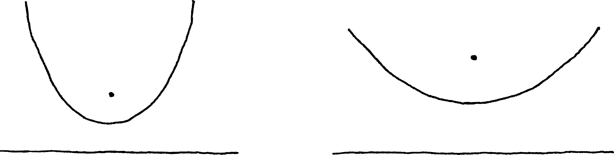
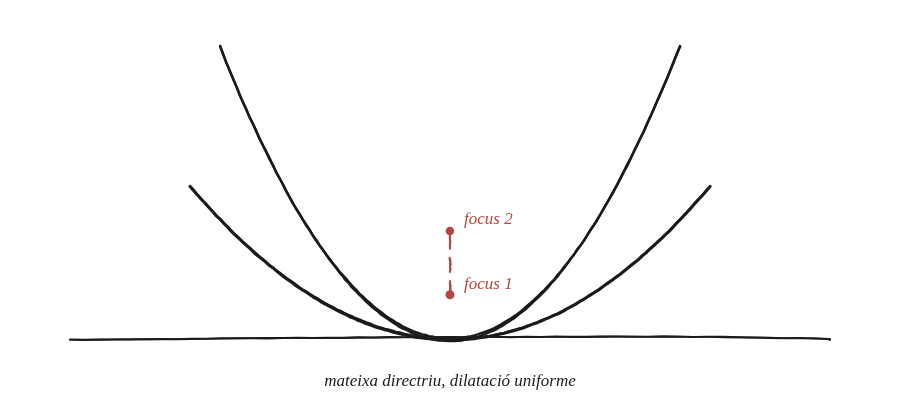

Què passa amb les dilatacions d'una paràbola?

Què hem de produir
Una altra qüestió ja va mostrar que totes les hipèrboles són dilatacions les unes de les altres. Aquí es pregunta el mateix per a la paràbola: totes les paràboles, són dilatacions d'una de sola?
Compta els graus de llibertat
Una hipèrbola necessita dos números (a i b) per descriure-la —per això calia una dilatació amb dos factors diferents. Una paràbola y=x²/(4p) només en necessita un (p). Quantes dilatacions —potser només una direcció, potser una d'uniforme— calen per passar d'una paràbola a qualsevol altra?
La construcció

Tancar-ho
Amb una dilatació uniforme —el mateix factor en x i en y— centrada al vèrtex, y=x²/(4p) es converteix en y=x²/(4·k·p): totes les paràboles són dilatacions uniformes les unes de les altres, a diferència de les hipèrboles, que en necessiten dues de diferents.
Totes les paràboles són dilatacions uniformes d'una de sola —un únic factor de dilatació basta, a diferència de la hipèrbola, que en necessita dos de diferents.
Comprovació
p=1 (y=x²/4) dilatada per factor 2 uniforme des del vèrtex. Seguint un punt: (x, x²/4) va a parar a (2x, x²/2). Amb X=2x la coordenada nova, x=X/2 i l'alçada nova és (X/2)²/2 = X²/8. La paràbola dilatada és, doncs, y=x²/8, és a dir p=2 —exactament k·p amb k=2. El focus, a alçada p, es mou de (0,1) a (0,2): s'allunya el mateix factor 2 que tota la resta.
Que calgui només un factor de dilatació —en lloc de dos, com a la hipèrbola— és el primer indici que totes les paràboles són "la mateixa figura, vista de més a prop o de més lluny": la mateixa idea que torna a aparèixer quan la paràbola surt com a envolupant d'un feix de rectes.